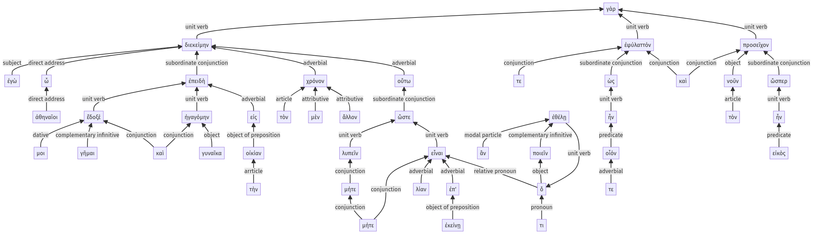

Lysias 1, sentence 1, 1.6.1-1.6.46a
| 1.6.47-1.6.64a
Key to functional highlighting
- connecting words
- unit verb
- subject
- object
Indented by level of subordination
1 ἐγὼ ὦ ἀθηναῖοι
2 ἐπειδὴ ἔδοξέ μοι γῆμαι
2 καὶ γυναῖκα ἠγαγόμην εἰς τὴν οἰκίαν
1 τὸν μὲν ἄλλον χρόνον οὕτω διεκείμην
2 ὥστε μήτε λυπεῖν
2 μήτε λίαν ἐπ' ἐκείνῃ εἶναι
3 ὅ τι ἂν ἐθέλῃ ποιεῖν
1 ἐφύλαττόν τε
2 ὡς οἷόν τε ἦν
1 καὶ προσεῖχον τὸν νοῦν
2 ὥσπερ εἰκὸς ἦν
Colored by verbal expression
ἐγὼ γάρ, ὦ ἀθηναῖοι, ἐπειδὴ ἔδοξέ μοι γῆμαι καὶ γυναῖκα ἠγαγόμην εἰς τὴν οἰκίαν, τὸν μὲν ἄλλον χρόνον οὕτω διεκείμην ὥστε μήτε λυπεῖν μήτε λίαν ἐπ' ἐκείνῃ εἶναι ὅ τι ἂν ἐθέλῃ ποιεῖν, ἐφύλαττόν τε ὡς οἷόν τε ἦν, καὶ προσεῖχον τὸν νοῦν ὥσπερ εἰκὸς ἦν.
Diagrammed syntactically
